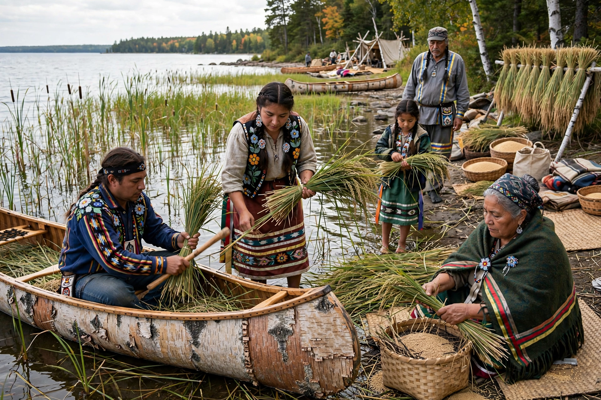

The Anishinaabe (plural Anishinaabeg) are a group of culturally related Indigenous peoples in the Great Lakes region of Canada and the United States, including the Ojibwe, Odawa and Potawatomi — the Council of Three Fires.
Anishinaabe oral history recounts migration from the Atlantic coast to the Great Lakes, guided by prophecy to the place where food grows on water — wild rice (manoomin). They were central to the fur trade and signed numerous treaties, many contested.
Clan (doodem) kinship, the Midewiwin society, powwows, and seasonal harvesting structure traditional life. Today Anishinaabe nations exercise sovereignty, run governments and language programmes in both countries.